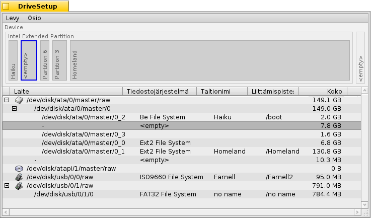
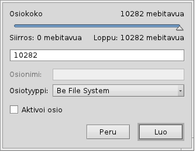

Suomi
Suomi Français
Français Deutsch
Deutsch Italiano
Italiano Русский
Русский Español
Español Svenska
Svenska 日本語
日本語 Українська
Українська 中文 ［中文］
中文 ［中文］ Português
Português Slovenčina
Slovenčina English
English Levyasema-asetukset
Levyasema-asetukset
| Työpöytäpalkki | ||
| Sijainti | /boot/system/apps/DriveSetup | |
| Asetukset | ~/config/settings/DriveSetup |
Levyasema-asetukset on työkalu osioiden luomiseksi, poistamiseksi ja alustamiseksi. Tällä hetkellä et voi muuttaa olemassaolevien osioiden kokoa tai siirtää niitä, joten tarvitset joko osioimattoman taltion (ehkä ulkoinen USB-asema tai toinen kiintolevy) tai sinun on tehtävä alustavat asetukset sellaisilla työkaluilla kuin GParted LiveCD tarjoamaan tilaa toisessa osiossa.
Ylimpänä on graafinen esitys kaikista osioita, jotka on luetteloitu alapuolella valitun laitteen osioina. Paitsi neljän ensisijaisten osion enimmäismäärän, jokainen noista osioista voi sisältää lukuisia laajennettuja/loogisia osioita. Sinun on ehkä laajennettava luetteloa +/- -käyttöliittymäkomponentilla, joka ilmaantuu siinä tapauksessa tuon laitteen eteen, nähdäksesi yksityiskohdat jokaisesta loogisesta osiosta.
Voit valita osion luettelosta ja liittää tai irrottaa sen komennoilla -valikossa tai painamalla näppäimiä ALT M tai ALT U.
Voit myös poistaa osion kokonaan -valikolla.
mikä tuo meidät tähän:
 Uuden osion luominen
Uuden osion luominen
Kun löydät alustamattoman tilan levyasemalta, kuten yllä <tyhjä>, voit luoda tähän tilaan uuden osion -valikolla (ALT C).
Tällä valintaikkunalla sinua kehotetaan säätämään osion koko ja tyyppi. Valitse jos haluat käyttää osiota Haiku-asennukseen tai jos haluat käyttää osiossa mielenkiintoisia Haiku-ominaisuuksia, kuten attribuutteja ja kyselyjä. Huomaa, että toiset käyttöjärjestelmät eivät ehkä pysty lukemaan sellaista osiota.
Jos olet luonut ensisijaisen osion etkä vain toista laajennettua/loogista osiota, yllä oleva valintaikkuna näyttää myös -valintaruudun. Sinun on valittava se, jos käytät tuota osiota Haiku-asennuksen alkulataukseen.
Ennen kuin voit käyttää, tai edes liittää uuden luodun osion, siihen on alustettava tiedostojärjestelmä.
Osion alustaminen
Vain liittämättömät osiot voidaan alustaa käyttäen -valikkoa.

Tässä asetat osion nimen ja sen lohkokoon. 2048 tavua per lohko on suositeltu, mutta voit valita laajemman tai pienemmän koon, jos sinulla on erityistarpeita.
Alustaminen tuhoaa kaiken tiedon tuolla osiolla!